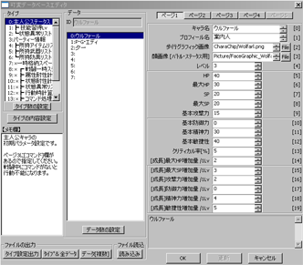
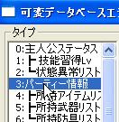
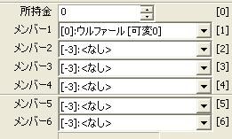
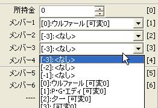
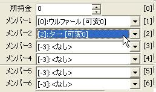
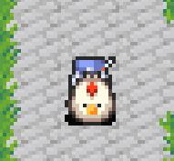
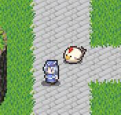

【目標】
最初から、ウルファールと夕一がパーティーを組んだ状態で
サンプルゲームをはじめるように設定します。
| 【1】 可変データベースをクリックすると、 右のようなウィンドウが表示されます。 |
 |
| 【2】 「タイプ」から「パーティー情報」を選びます。 |  |
| 【3】 右の方にメンバー1〜6という表示があります。 ここで選択されているキャラクターが ゲーム開始時に一緒にいるパーティーメンバーです。 |
 |
| 【4】 変更したいメンバーの枠をクリックすると 設定するキャラクターを選べます。 試しに増やしたり変えたりしてみましょう。 ここでは「夕一」くんを増やしてみました。 ※：ここで選べるキャラクターは「主人公ステータス」で設定したキャラクター達です。 →参考【新しく主人公を増やしたい】 |
 ⇒ |
| 【5】 テストプレイをすると、無事、 夕一くんが一緒についてくるようになりました。 |
  |
＜執筆者：PerryKarn＞
＜修正：SmokingWOLF 横幅が長くなっていた項目【4】【5】を修正 2010/3/11＞